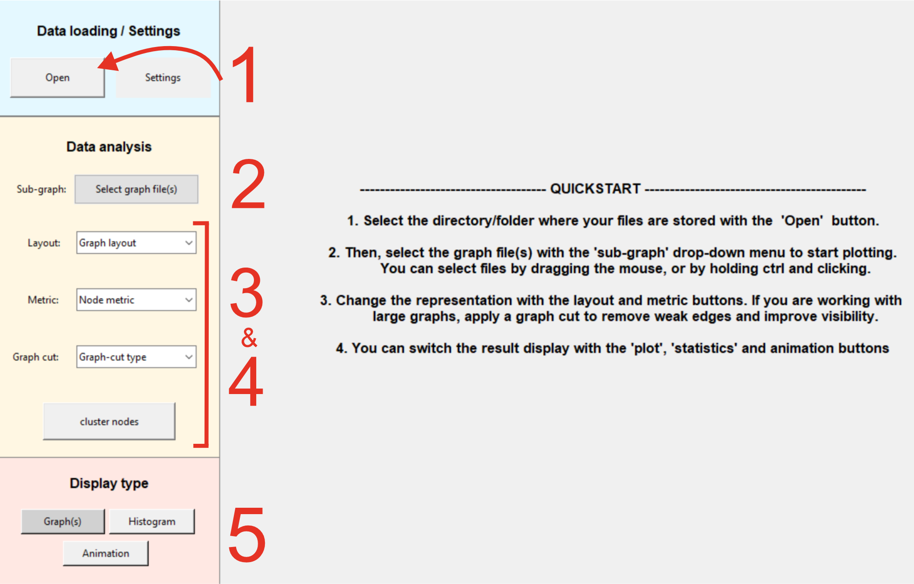

TempGraphViz
An interactive GUI designed for exploring, analyzing, and visualizing temporal graphs.
Installation
TempGraphViz is part of the Python Package Index and can be installed via pip install tempgraphviz.
To start the GUI, simply run python tempgraphviz.main_gui
If you do not have Python installed, or are not familiar with it, you can download tempgraphviz as an excucutable file here.
Quickstart
Your data should be stored in a single folder, as .csv files. Each .csv file representing a graph at a given time point of the analysis.
Run python tempgraphviz.main_gui or open the excutable. Then:
- Click Open to select the folder containing your
.csvgraph files. - Use the Sub-graph selector to choose one or multiple graph layers to visualize/analyse.
- Adjust the layout and metrics to explore structural properties.
- Optionally apply a graph cut for better readability on large graphs.
- Switch between Graph, Histogram, and Animation views for different insights.

Main Functionalities
Structure visualization
Once you have selected the input files to be visualized, the default view will be a 3D stack that lets you see how connections evolve as a function of time.
You can also compute various metrics that quantify the importance of the nodes in the graph. More important nodes will be displayed larger as others.

Metrics distribution

Graph animation